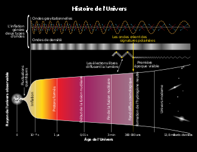
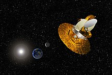
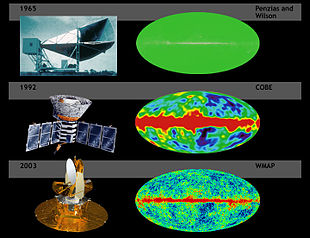
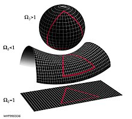
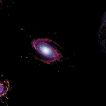
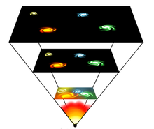

Le Big Bang (« Grand Boum »a) est un modèle cosmologique utilisé par les scientifiques pour décrire l'origine et l'évolution de l'Univers1. De façon générale, le terme « Big Bang » est associé à toutes les théories qui décrivent notre Univers comme issu d'une dilatation rapide. Par extension, il est également associé à cette époque dense et chaude qu’a connue l’Univers il y a 13,8 milliards d’annéesb, sans que cela préjuge de l’existence d’un « instant initial » ou d’un commencement à son histoire. La comparaison avec une explosion, souvent employée, est elle aussi impropre3.
Preuves observationnelles
Deux preuves observationnelles décisives ont donné raison aux modèles de Big Bang : il s’agit de la détection du fond diffus cosmologique, rayonnement de basse énergie (domaine micro-onde) vestige de l’époque chaude de l’histoire de l’univers, et la mesure de l’abondance des éléments légers, c’est-à-dire des abondances relatives de différents isotopes de l’hydrogène, de l’hélium et du lithium qui se sont formés pendant la phase chaude primordiale. Ces deux observations remontent au début de la seconde moitié du xxe siècle, et ont assis le Big Bang comme le modèle décrivant l’univers observable. Outre la cohérence quasi parfaite du modèle avec tout un autre ensemble d’observations cosmologiques effectuées depuis, d’autres preuves relativement directes sont venues s’ajouter : l’observation de l’évolution des populations galactiques, et la mesure du refroidissement du fond diffus cosmologique depuis plusieurs milliards d’années.
Fond diffus cosmologique
L’expansion induit naturellement que l’Univers a été plus dense par le passé. À l’instar d’un gaz qui s’échauffe quand on le comprime, l’Univers devait aussi être plus chaud par le passé. Cette possibilité semble évoquée pour la première fois en 1934 par Georges Lemaître, mais n’est réellement étudiée qu’à partir des années 1940. Selon l’étude de George Gamow (entre autres), l’Univers doit être empli d'un rayonnement qui perd de l’énergie du fait de l’expansion, selon un processus semblable à celui du décalage vers le rouge du rayonnement des objets astrophysiques distants. Gamow réalise en effet que les fortes densités de l’Univers primordial doivent avoir permis l’instauration d’un équilibre thermique entre les atomes, et par suite l’existence d'un rayonnement émis par ceux-ci. Ce rayonnement devait être d’autant plus intense que l'Univers était dense, et devait donc encore exister aujourd’hui, bien que considérablement moins intense. Gamow fut le premier (avec Ralph Alpher et Robert C. Herman) à réaliser que la température actuelle de ce rayonnement pouvait être calculée à partir de la connaissance de l’âge de l'Univers, la densité de matière, et l'abondance d’hélium.
Problème de la platitude
Un autre problème qui apparaît quand on considère l’étude de l’évolution de l’univers est celui de son éventuel rayon de courbure. La relativité générale indique que si la répartition de matière est homogène dans l’univers, alors la géométrie de celui-ci ne dépend que d’un paramètre, appelé courbure spatiale. Intuitivement, cette quantité donne l’échelle de distance au-delà de laquelle la géométrie euclidienne (comme le théorème de Pythagore) cesse d’être valable. Par exemple, la somme des angles d’un triangle de taille gigantesque (plusieurs milliards d’années-lumière) pourrait ne pas être égale à 180 degrés. Il reste parfaitement possible que de tels effets, non observés, n’apparaissent qu’à des distances bien plus grandes que celles de l’univers observable.
Big Crunch
En cosmologie, le Big Crunch ou effondrement terminal1 est un des possibles destins de l'Univers. Il désigne l'effondrement de l'Univers, c'est-à-dire une phase de contraction faisant suite à la phase d'expansion. C'est donc en quelque sorte un « Big Bang à l'envers », qui consiste à ramener le cosmos à un point de singularité d'origine annulant l'espace et le temps. Vers la fin de cet effondrement, l'Univers atteint une densité et une température gigantesques. Ce scénario cosmologique se produit selon les propriétés du contenu matériel de l'Univers, en particulier les valeurs relatives de sa densité d'énergie et de sa densité critique.
Modèle
L'univers est en expansion. Cette expansion est ralentie par la gravitation. Si cette dernière est suffisante, l'expansion peut se muer en contraction. C'est ce qui se produit dans le cas des univers finis. Dans un univers fini (ou « fermé »), appelé donc à subir le Big Crunch, les équations montrent que la densité réelle de matière est supérieure à une quantité désignée sous le nom de densité critique, mesurant pour sa part le taux d'expansionnote 1. Dans un tel univers, l'expansion va ralentir, s'arrêter, puis se transformer en une contraction conduisant l'univers à occuper un volume identique à un point, assimilable à celui à l'origine du Big Bang. Ce phénomène est appelé Big Crunch. Au contraire les univers dont l'expansion se poursuit indéfiniment ont à chaque instant une densité réelle inférieure à leur densité critique (calculée au même instant). Ces univers sont infinis et sont aussi désignés sous le nom d'univers « ouverts ». Il faut voir dans ce cas en la fin de l'univers non pas le Big Crunch mais le moment où tous les stocks de matière à fusionner (principalement l'hydrogène) auront été utilisés par les étoiles, cela entraînant leur mort.
